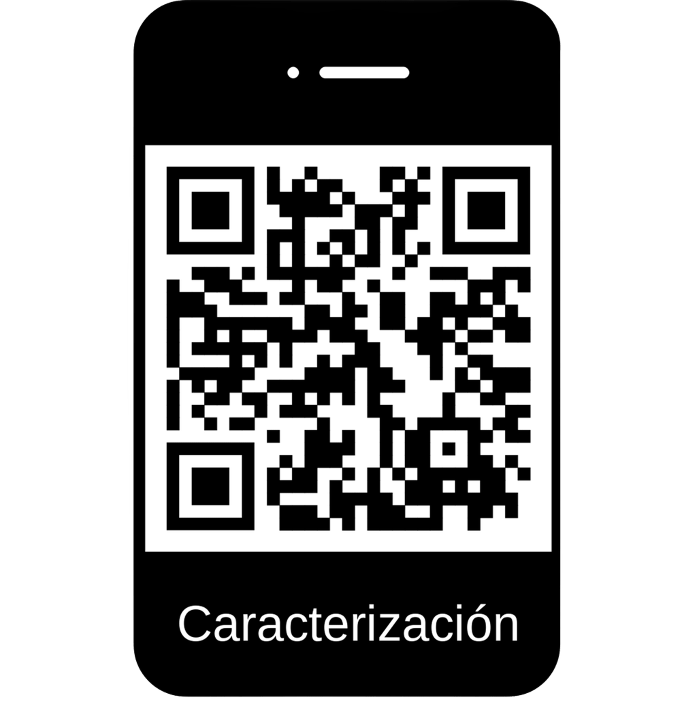

Pastorales de la comunidad
En este espacio se encuentran a disposición todas las actividades pastorales realizadas por la comunidad del barrio Cedro Golf.

Quebrada El Cedro
Paqueros de la Quebrada El Cedro transforman 3,4 ton. de residuos aprovechables en compost para sus plantas.
Escanea el código QR para más información.

¡Nos interesa conocer a nuestra comunidad!
Escanea el código QR y participa en la caracterización de los miembros del barrio Cedro Golf con el fin de fortalecer nuestra comunicación y unión en beneficio de una mejor sociedad.